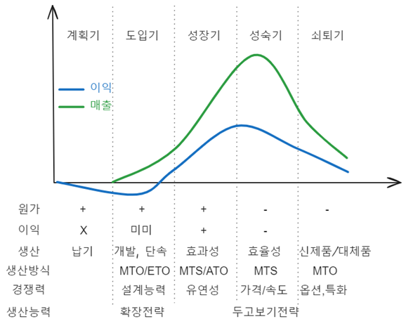

flowchart LR 설비배치 --- 유형 & 분석기법 subgraph 1[" "] 유형 --- 기본형 & 혼합형 기본형 --- 11["제품(라인)별 배치"] 기본형 --- 12["공정(기능)별 배치"] 기본형 --- 13["위치고정형(프로젝트) 배치"] 혼합형 --- 21["셀(그룹별) 배치"] 혼합형 --- 22["U자형 배치"] end subgraph 0[" "] 분석기법 --- 공정별 & 제품별 & 셀별 공정별 --- 도시해법 & SLP & 51[전산배치 기법] 제품별 --- 52["라인 발란싱"] end style 1 fill:#eef style 0 fill:#fee
생산구조와 방식(Layout)
Keywords
설비배치, 제품별 배치, 공정별 배치, 위치고정형 배치, 셀 배치, 프로젝트형 배치, CMS
생산구조
생산구조(Production Structure)란 기업이 제품이나 서비스를 생산하기 위해 투입하는 자원(인력, 설비, 자본 등)과 이들 자원이 조직되고 조합되어 생산활동을 수행하는 체계와 형태를 의미한다. 즉, 생산 활동의 조직적 배열과 그 운영 방식에 관한 전반적인 구성을 말한다.
생산구조 개요
생산구조의 구성 요소
생산구조의 구성요소는 제품이나 서비스를 생산하기 위한 모든 자원들이 해당될 수 있다.
| 구성 요소 | 설명 |
|---|---|
| 생산 설비 | 기계, 장비, 공장 등의 물리적 자산 |
| 인적 자원 | 생산 과정에 투입되는 노동력 및 기술자 |
| 자본 | 생산을 위한 투자 자본, 운영 자금 |
| 생산 공정 | 원자재를 완제품으로 변환하는 단계별 작업 및 프로세스 |
| 조직 및 관리 | 생산활동을 조율하고 운영하는 조직체계 및 관리 시스템 |
| 정보 시스템 | 생산 계획, 품질 관리, 재고 관리 등을 지원하는 정보기술 |
생산구조의 유형
1. 집중형 생산구조 (Centralized Production Structure)
- 생산 설비 및 인력이 한 곳에 집중되어 운영
- 대량생산에 적합하며 관리 및 품질 통제가 용이
- 물류비용 증가 및 지역 수요 대응에 제한적
2. 분산형 생산구조 (Decentralized Production Structure)
- 여러 지역에 생산시설 분산 배치
- 지역별 수요에 신속 대응 가능
- 관리 복잡도 증가, 설비 중복 투자 가능성 존재
3. 혼합형 생산구조 (Hybrid Production Structure)
- 집중과 분산의 장점을 결합한 형태
- 주요 핵심 공정은 집중, 일부 공정은 분산 운영
- 비용 절감과 시장 대응력 조화 가능
생산구조 결정 요인
생산구조 결정요인은 제품 특성을 비롯하여 경영 전략, 환경 및 정책적인 요인까지 고려해야 한다.
- 제품 특성: 제품의 복잡성, 다양성, 수명주기
- 시장 특성: 고객 수요, 지역성, 경쟁 상황
- 기술 수준: 생산 설비의 자동화, 정보 시스템 활용도
- 비용 구조: 설비 투자비, 인건비, 물류비용 등
- 경영 전략: 비용 우위, 품질 우위, 납기 우위 등
- 환경 및 정책: 법규, 환경 규제, 정부 지원 정책
생산구조와 생산방식의 관계
생산구조는 생산방식(대량생산, 맞춤생산 등)을 지원하는 기본 토대가 된다. 적절한 생산구조 설계가 생산방식 효율성 극대화에 기여하고 생산구조 변화는 경쟁력 확보와 시장 변화 대응의 핵심 요소이다. 생산구조는 기업의 생산 활동을 체계적으로 조직하는 근간이며, 제품 특성, 시장 요구, 기술 발전 및 경영 전략에 따라 적합한 구조를 설계하는 것이 중요하다. 효율적인 생산구조는 원가 절감, 품질 향상, 납기 단축 등 경쟁력 강화를 위한 필수 조건이다.
생산 방식
생산 방식(Production Systems)은 제품이나 서비스를 생산하는 데 사용되는 조직적, 기술적 접근 방법을 의미한다. 기업은 제품 특성, 생산량, 고객 요구, 기술 수준 등에 따라 적합한 생산 방식을 선택하며, 이는 생산 효율성, 품질, 원가, 납기 등에 직접적인 영향을 미친다.
주요 생산 방식 유형은 설비 배치에 따른 생산 방식과 완제품 전환 시점에 따른 생상 방식 등이 있다.
설비 배치에 따른 생산 방식
설비 배치는 사업장 내에서 경제적 활동을 위해 물리적으로 설비를 배치하는 의사결정이다. 설비 배치 대상은 공간을 필요로 하는 모든 자원(작업자, 기계, 작업장, 부서, 통로, 창고 등)이 된다.
| 특성 | 제품별 배치 | 공정별 배치 | 위치고정형 배치 |
|---|---|---|---|
| 생산제품 | 소품종 대량, 표준품 | 다품종 소량생산, 주문품 | 극소수 특정품(프로젝트) |
| 가공품 흐름 | 제품별 연속 흐름 | 주문별 다양한 단속 경로 | 생산물 고정, 설비, 인력 이동 |
| 운반거리/비용 | 거리 짧고 비용 낮음 | 거리 길고 비용 높음 | 시설, 인력, 원자재 운반비 높음 |
| 시설/공간 | 활용률 높음 | 활용률 낮음 | 보통 수준이나 성격에 따라 다름 |
| 설비투자 | 고가 전용 설비 | 저렴한 범용 설비 | 이동 가능한 범용 설비 |
| 설비변경비용 | 매우 높음 | 낮음 | 낮음 |
| 생산비 | 고정비 높고 변동비 낮음 | 변동비 높고 고정비 낮음 | 고정비 낮으나 변동비는 고정별 배치보다 높음 |
| 주요관리사항 | 설비 효율 | 설비 배치 | 시방 변경 및 일정 관리 |
배치 유형
설비 배치는 그 특성에 따라 위치고정형 배치, 공정별 배치, 제품별 배치, 그룹별 배치 등으로 나눌 수 있다.
위치고정형 배치
프로젝트 배치라고도 하며 제품이 매우 크고 복잡한 경우 제품이나 공사 구조물을 한 장소에 고정하고 원자재, 기계설비, 작업자 등을 제품 중심으로 옮겨 가면서 생상하는 형태이다.
| 장점 | 단점 |
|---|---|
|
|
공정별 배치
공정별 배치는 동일한 기능을 갖는 설비를 집단으로 배치하는 형태이다. 기능별 배치라고도 하며 주로 가공 공정에 이용되며 다품종 소량생산 시스템에 적합하다. 부품이나 구성품을 표준화 하기 어렵고 범용설비를 이용하여 제품을 생산한다.
| 장점 | 단점 |
|---|---|
| 변화에 대한 유연성이 크다 | 대량생산 시 불리하다. |
| 범용설비 투자 및 배치에 비용이 적게 든다. | 운반능률이 떨어진다. |
| 기계고장, 작업자 결근 등에도 생산량 유지가 용이하다. | 재고나 재공품의 투자액과 저장면적이 많이 소요된다. |
| 소량생산 시 유리하다. | 설비와 작업자 이용률이 낮다. |
| 직무만족을 증진시킨다. | 주문별로 일정계획이 달라 관리가 어렵다. |
제품별 배치
제품별 배치는 제품이나 서비스를 생산하기 위한 작업 절차와 동일하게 설비를 배치하는 형태이다. 컨베이어와 같은 운반장치가 필요하며 특정 제품을 생산하기 위한 전용설비를 이용한다. 대표적으로 자동차, 전자제품 등의 조립생산공정이 이에 해당하며 생산능률은 높으나 설비투자비용이 크며 소요가 감소하게 되면 단위당 제조 원가가 상승하게 된다.
| 장점 | 단점 |
|---|---|
| 단위단 생산비용이 낮다. | 작업에 대한 유연성이 떨어진다. |
| 운반거리가 짧고 가공물의 흐름이 빠르다. | 전용설비 투자와 배치에 자본이 많이 든다. |
| 기계와 작업자 이용률이 높다. | 기계고장 및 작업자 결근 등은 전체 공정에 영향을 미친다. |
| 재고와 재공품 저장면적이 적다. | 적은 수량의 제조 시 고정비 부담이 크다. |
| 일정계획이 단순하고 관리가 용이하다. | 단조로운 작업으로 직무만족이 떨어진다. |
| 작업이 단순하여 작업자 훈련 및 감독이 용이하다. |
그룹별 배치
그룹별 배치는 자재 운반, 대기 시간을 줄이는 한편 다양한 품목을 생산할 수 있도록 고안된 설비 배치 형태로 공정별 배치와 제품별 배치의 특징 모두 갖는 형태이다. 즉, 생산공정 또는 제품 특성에 따라 생산 품목을 몇 개 그룹으로 나누어 각 그룹별로 생산설비를 배치하는 형태이다. 그룹테크놀로지(GT)의 셀형 배치*와 JIT 생산 시스템의 U자형 배치가 대표적이다. 중품종 중량생산에 적합한 형태이다.
셀형 배치

GT 배치 또는 그룹별 배치라고 하며 작업장과 기계를 유사한 생산/가공 흐름을 갖는 제품들로 그룹화하여 셀(cell) 단위로 배열하고 부품 분류별로 가공하는 형태이다. 금속가공 및 조립, 컴퓨터 칩 제조 및 조립 작업에 적용되며 유연성은 유지(공정별 배치 장점)하면서 효율성을 증대(제품별 배치 장점)시키려는 형태이다.
| 장점 | 단점 |
|---|---|
| 흐름이 일정하고 이동거리가 짧아 운반시간/비용이 적다. | 재배치에 추가비용이 소요된다. |
| 가공물의 흐름이 원활하여 공정품이 적다. | 가공물의 흐름균형을 이루는 것이 쉽지 않다. |
| 유사부품을 가공하므로 준비시간이 짧다. | 부품에 따라 분류하기에 애매한 것이 있다. |
| 빨리 가공할 수 있어 납기가 단축된다. | 다기능공 양성 및 관리가 어렵다. |
| 반복적으로 관리와 생산자동화가 용이하다. | 공장이용률이 떨어지기도 한다. |
U자형 배치

다양한 수요변화에 풀 시스템(pull system)을 전개하는 일본기업에서 흔히 U자형 조립라인을 사용한다. U자형 배치는 셀형배치와 같이 일본에서 작업단순화와 지속적 개선사상을 토대로 공정별로 배치를 개선한 것이다.
U자형 배치는 생산 라인을 U자 형태로 배치하여 작업자와 자재 이동을 최적화하여 효율성을 높이는 방법으로 주요 원칙은 다음과 같다.
작업자 중심 배치(다공정 담당)
- 한 명의 작업자가 여러 공정을 담당할 수 있도록 설계
- 이동 거리를 줄이고 다기능 작업을 가능하게 함
작업 흐름 최적화
- 공정 간 이동을 최소화하여 흐름을 원활하게 유지
- Pull 방식 생산(Just-In-Time, JIT)과 연계하여 낭비 최소화
유연성 확보
- 생산량 변화에 대응하기 쉽게 조정 가능
- 새로운 제품이나 공정 변경 시 쉽게 수정 가능
공간 활용 효율성
- 설비 간격을 줄이고 작업 공간을 최적화
- 동일 면적에서 더 많은 공정을 수행할 수 있도록 설계
인체공학적 설계
- 작업자의 피로를 줄이기 위한 동선 최적화
- 서거나 앉아서 작업할 때 효율성을 고려하여 배치
U자형 배치는 다음과 같은 장점이 있다.
| 장점 | 단점 |
|---|---|
| 작업자 이동 최소화로 생산 효율 증가 | 작업자 교육 및 다기능 훈련 필요 |
| 다기능 작업이 가능하여 인력 활용 최적화 | 공정별 작업 속도 차이 발생 시 균형 조정 어려움 |
| Pull 생산방식 적용이 용이하여 재고 감소 | 초기 설비 배치 변경에 시간과 비용 소요 |
| 공간 활용도가 높아 공장 내 생산면적 절약 | 공정 간 간섭이 발생할 가능성 존재 |
| 작업자 간 협업이 용이하여 문제 해결 속도 증가 | - |
CMS
CMS(Cellular Manufacturing System)는 셀 제조 방식으로, 생산 공정에서 여러 작업을 하나의 작은 생산 단위인 셀로 구성하여 각 셀에서 다양한 작업을 독립적으로 처리하는 방식을 의미한다. CMS는 생산 효율성 향상과 품질 개선을 목표로 하는 방식으로, 기존의 배치 생산 방식이나 작업 분담 방식을 개선하기 위해 등장했다.
flowchart TB
00["CMS 등장 배경"]
10("대량생산 한계")
20("다양화된 소비자 요구")
30("이동과 대기 낭비")
40("린 생산 도입")
50("유연생산 필요")
00 --- 10 & 20 & 30 & 40 & 50
- 대량 생산의 한계
- 대량 생산 시스템(Mass Production)은 20세기 초, 헨리 포드의 조립라인 방식에 의해 대표되는 방식으로, 효율성을 높이기 위해 설계되었다. 그러나 대량 생산은 대규모 생산에 유리하지만, 다양한 제품을 유연하게 생산하거나 생산 라인의 전환에 대응하기에는 한계가 있었다.
- 또한 대량 생산 방식은 제품의 품질이나 낭비 문제(불필요한 이동, 대기 시간 등)가 발생할 수 있었다.
- 다양화된 소비자 요구
- 소비자 요구가 다양해짐에 따라, 기업은 제품의 맞춤화와 빠른 생산 전환이 필요해졌다. 이를 위해서는 생산 공정이 더 유연하고 효율적으로 변화해야 했다.
- 다양한 모델이나 소량 생산이 증가하면서 기존의 대량 생산 방식은 유연성과 효율성에서 한계에 부딪혔다.
- 불필요한 이동과 대기 시간 문제
- 전통적인 생산 방식에서는 각 작업 단계가 분리되어 있거나 먼 거리에 있어 작업 간 이동이 많았다. 이로 인해 대기 시간과 이동 시간이 발생해 비효율성이 증가했다.
- 이러한 문제를 해결하기 위해, 셀이동형 생산방식(Cellular Manufacturing System)이 필요하게 되었다.
- 린 생산(Lean Production)의 도입
- 1980년대 도요타 생산 시스템(TPS)에서 발전한 린 생산(Lean Production) 방식은 낭비를 최소화하고, 유연하고 효율적인 생산 시스템을 구축하는 방법론으로 주목받았다.
- 린 생산에서 강조되는 낭비 제거와 효율성은 CMS의 핵심 요소로 자리 잡았다. 특히, CMS는 셀 단위로 작업을 분할하고, 각 셀이 독립적으로 작업을 처리하여 공정 흐름을 개선하고, 작업자들이 다양한 기술을 수행할 수 있도록 하여 유연성을 높였다.
- 유연한 생산 시스템 필요성
- 다품종 소량 생산이 대세로 자리 잡으면서 공정의 유연성이 매우 중요해졌다. 제품이 자주 변경되거나 수요가 예측 불가능할 경우, CMS는 빠르게 제품을 전환하고 생산 효율성을 극대화할 수 있는 방법이 되었다.
- CMS는 각 셀에서 다기능을 수행할 수 있는 팀워크와 전문성을 강조하고, 소규모로 독립된 셀 내에서 효율적인 작업을 할 수 있도록 하여 유연성과 생산성을 동시에 높였다.
flowchart TB
00["CMS 핵심 특징"]
10("셀 이동형 구조")
20("다기능 작업자")
30("낭비 제거")
40("품질 향상")
00 --- 10 & 20 & 30 & 40
CMS의 등장과 핵심 특징
- 셀이동형 구조 생산 라인을 셀 단위로 나누어, 각 셀이 독립적으로 작업을 수행하도록 하여 유연성과 효율성을 증대시켰다.
- 다기능 작업자 각 셀에서 작업자는 다양한 작업을 동시에 할 수 있도록 교육받고, 기술을 습득하여 유연한 생산이 가능하도록 했다.
- 낭비 제거 생산 과정에서의 대기 시간, 이동 시간, 불필요한 재작업 등을 줄이기 위해 셀 내부에서 모든 작업이 최적화되도록 구성되었다.
- 품질 향상 셀 단위의 작업자가 품질 관리를 담당하며, 문제가 발생하면 빠르게 해결할 수 있도록 시스템화되었다.
CMS는 대량 생산 방식의 유연성 부족과 낭비 문제를 해결하고, 다품종 소량 생산의 요구를 충족하기 위해 발전한 생산 방식이다. 린 생산 원칙을 바탕으로 효율성과 품질 향상을 추구하며, 유연하고 효율적인 생산 체제를 구축하기 위해 셀 단위의 독립적인 작업을 통해 생산 시스템을 최적화한다.
| 장점 | 단점 |
|---|---|
| 공정 간 이동 거리 단축으로 리드 타임 감소 | 셀 구성 및 초기 설계에 많은 시간과 비용 필요 |
| 재공품(WIP) 감소로 재고 비용 절감 | 작업 부하 불균형 발생 가능성 |
| 품질 개선 및 불량률 감소(작업자 책임 의식 증가) | 다기능 작업자 교육 필요 |
| 작업자 간 협업 촉진으로 유연한 생산 가능 | 특정 제품군에 최적화되어 다양한 제품 생산 시 비효율 발생 |
| 생산 변화 대응이 용이하여 고객 주문에 유연한 대응 가능 | 셀 간 작업 조정이 어려울 수 있음 |
CMS와 컨베이어 생산방식은 각각 다른 생산 방식으로, 각각의 특성에 따라 장단점이 존재한다. 두 방식의 차이를 이해하는 것은 특정 생산 환경에 맞는 방식을 선택하는 데 중요한 요소가 된다.
| 구분 | CMS | 컨베이어 생산방식 |
|---|---|---|
| 유연성 | 다품종 소량 생산에 유리하고, 제품 변경에 빠르게 대응 가능 | 대량 생산에 적합하며, 제품 변경 시 유연성이 떨어짐 |
| 생산 효율성 | 셀 내부에서 효율적인 작업 흐름, 대기 시간과 이동 시간이 적음 | 대량 생산 시 효율적이나 다양한 제품 처리 시 효율성 저하 |
| 품질 관리 | 셀에서 품질을 직접 관리하여 문제를 즉시 해결 가능 | 품질 관리는 개별 작업자에 의존하며, 라인 문제가 발생할 경우 전체에 영향 |
| 설비 비용 | 초기 설비 비용이 높고, 셀 구성이 복잡할 수 있음 | 초기 설비 구축 후 생산 효율이 높지만, 설비 변경 어려움 |
| 작업자 다기능성 | 작업자가 다양한 작업을 수행하여 유연성이 높음 | 각 작업자는 특정 작업만 수행하여 다기능성 부족 |
| 적합한 생산 환경 | 소량 다품종 생산, 유연성 요구 시 적합 | 대량 생산, 고정된 제품 생산 시 적합 |
| 낭비 | 이동 시간, 대기 시간 등이 최소화되어 낭비가 적음 | 작업 대기나 이동 시간이 발생할 수 있어 낭비가 발생할 수 있음 |
CMS는 유연성이 뛰어나며 다품종 소량 생산에 적합하다. 작업자가 여러 가지 작업을 처리할 수 있고, 품질 관리와 낭비 최소화에 유리하다. 하지만 초기 투자 비용이 크고, 작업자 교육이 필요하며, 공정 복잡성이 증가할 수 있다.
반면 컨베이어 생산방식은 대량 생산에 최적화되어 있으며, 자동화가 용이하고, 일정한 제품을 대규모로 생산하는 데 효율적이다. 그러나 유연성이 부족하고, 설비 변경이나 다양한 제품 생산에는 어려움이 있다.
따라서, 생산 환경과 요구에 맞는 시스템을 선택하는 것이 중요하다.
설비 배치 분석 기법
생산운영 시스템 내 작업, 물자, 정보가 원활하게 흐르게 하여 생산 시스템 효율을 극대화하기 위한 설비 배치 분석 기법은 다음과 같다.
flowchart LR
subgraph slp[" "]
SLP
end
subgraph clp[" "]
direction LR
20[전산배치기법]
21[구성방식] --- 211(CORELAP) & 212(ALDEP) & 213(PLANET)
22[개선방식] --- 221(CRAFT) & 222(COFAD)
20 --- 21 & 22
end
00["설비배치 분석기법"] --- SLP & 20
style SLP fill:#eef
컴퓨터를 활용한 기법, 즉 전산배치기법은 초기 또는 기존 배치안을 필요 여부에 따라 구성형과 개선형으로 나눌 수 있다. 구성형은 배치안이 불필요하며 질적 요인을 중심으로 분석한다. 이에 반해 개선형은 초기안 또는 기존 배치엔에서 양적 요인을 중심으로 분석을 진행한다. 전자가 접근 필요성을 평가 한다면 후자는 물자흐름, 총운반비용 등을 분석한다.
컴퓨터를 활용한 분석
컴퓨터를 활용한 분석 기법(Computerized Layout Technique)은 배치하고자 하는 설비와 작업 장소가 많은 경우 휴리스틱(heuristic) 방법으로 컴퓨터 탐색 기법을 통해 다양한 배치안을 제시한다.
CORELAP(Computerized Relationship Layout Planning)
- 1967년, R.S. Lee, J.M. Moore가 개발한 구성방식으로 질적 요인 중심 배치 방식
- 접근 필요성을 수치로 전환하여 각 부문 종합 근접도(TCR, Total Closeness Rating)을 산출, TCR이 큰 부분을 중심으로 배치
- 최대 70부분까지 처리 가능
- 주요 입력 자료: 부서 간 활동 관련 표, 건물 및 각 부서 면적 등
ALDEP(Automated Layout Design Program)
- 1967년 IBM이 개발한 구성 방식으로 질적 요인 중심 배치 방식
- 임의로 한 부분을 배치하는 것에서 시작, 나머지 부문은 근접도에 따라 배치하는 시행착오적 방법 적용
- 각 배치 안에 따라 총 점수를 계산하여 그 중 최대 점수를 선정하여 대안 제시
- 주요 입력 자료: 부서 간 활동 관련 도표, 부서 위치, 건물 크기 및 층수 등
CRAFT(Computerized Relative Allocation of Facilities)
- 1963년 E.S. Buffa, G.C Armour가 개발한 개선 방식
- 최초 또는 기존 배치 안을 토대로 개선안을 추구
- 물자 흐름을 중심으로 전체 운반 비용이 최소가 되는 배치안 선정
- 최대 40개 부문까지 처리 가능
- 물량-거리 모형을 컴퓨터화한 기법
COFAD(Computerized Facility Design)
- 자재취급시스템에 대한 선택을 추가적으로 고려하여 모든 설비 이용률을 계산, 이용률에 따라 설비 교환과 운반비용 계산, 설비 향상 여부 조사 배치
SLP
SLP(체계적 설비 배치, Systematic Layout Planning)는 설비 배치 시 효율적인 질적요인을 분석하기 위해 머더(Richard Muther)가 소개한 기법이다.
- 물자 흐름 및 상호 관계 검토 후 활동 내용 작성
- 필요한 면적에 따른 이용 가능 면적 작성
- 제약조건과 시설 등 설비 공간을 고려하여 최종 배치안 작성
부서 간 관계 밀접도와 같은 질적 기준을 사용하여 설비를 배치하는 기법이다.
SLP 시설 배치 절차 4단계
1. 입지계획: 시설이 배치될 지역 위치 결정
2. 기본 배치: 선정된 지역 전반적인 배치 결정
3. 상세 배치: 배치할 시설 및 설비 실제 위치 결정
4. 설치: 상세 배치도에 따라 실물 배치Muther는 6단계 절차를 이용하여 관계가 가장 빈번하고 논리적으로 밀접한 2개 영역을 파악했다.

- Muther 6단계 SLP
-
- 도표 관계 작성
- 공간 조건 설정
- DOR, ENG, SEC, FOY, FIL, COP, STO 등
- 활동관련도, 각 공정 관계를 한눈에 알아보기 쉽게 작성한 표
- 활동 관계도 작성
- 상호 관계도(Relationship Diagram), 자재 흐롬 분석과 부문 상호 관계 분석이 끝난 후 이 두 가지 결과를 결합하여 상호 관계도 작성
- 상호 관계도(Relationship Diagram), 자재 흐롬 분석과 부문 상호 관계 분석이 끝난 후 이 두 가지 결과를 결합하여 상호 관계도 작성
- 공간 관계 설비 배치
- 면적 상호 관계도(Space Relationship Diagram), 각 부분 면적을 산출하여 정해진 위치에 블록 형태로 배치
- Block lay out case study, 현실적 제약조건과 전제조건을 반영하여 여러 가지 layout 대안 수립
- 면적 상호 관계도(Space Relationship Diagram), 각 부분 면적을 산출하여 정해진 위치에 블록 형태로 배치
- 대체 배열 안 평가
- 개인적 취향, 공급품 이동, 방문객 접견, 여연성에 관해 평가
- 개인적 취향, 공급품 이동, 방문객 접견, 여연성에 관해 평가
- 선정된 설비 배치 시행
- 도표 관계 작성
활동관련도
공장 배치에서 활동관련도(Activity Relationship Chart, ARC)는 각 작업장이나 부서 간의 공간적 배치 필요성을 평가하는 도구다. 이를 통해 작업 흐름의 효율성을 극대화하고, 물류 및 생산 동선을 최적화한다.
| 근접도 | 설명 | 예시 |
|---|---|---|
| A | Absolutely Necessary (절대 필요) | 조립 라인 ↔︎ 부품 공급 구역 |
| E | Especially Important (특히 중요) | 가공 라인 ↔︎ 검사 구역 |
| I | Important (중요) | 창고 ↔︎ 생산 관리실 |
| O | Ordinary (보통) | 직원 휴게실 ↔︎ 생산 현장 |
| U | Unimportant (불필요) | 사무실 ↔︎ 원자재 보관 창고 |
활동관련도의 5가지 근접도
- A (Absolutely Necessary, 절대적으로 필요) - 두 작업장은 반드시 인접해야 하며, 떨어질 경우 심각한 비효율 발생.
- 예) 조립 라인과 부품 공급 구역, 용광로와 주조 구역.
- E (Especially Important, 특히 중요) - 인접하는 것이 매우 유리하며, 떨어질 경우 작업 효율이 크게 저하됨.
- 예) 가공 라인과 검사 구역, 포장 부서와 출하 구역.
- I (Important, 중요) - 인접하면 효율이 증가하지만, 떨어져 있어도 큰 문제가 되지 않음.
- 예) 사무실과 생산 관리실, 보관 창고와 생산 구역.
- O (Ordinary, 보통) - 인접 여부가 큰 영향이 없으며, 공간 상황에 따라 배치 가능.
- 예) 직원 휴게실과 생산 현장, 기계 정비실과 생산 라인.
- U (Unimportant, 불필요) - 두 작업장은 서로 멀리 떨어져도 문제 없음.
- 예) 관리 사무실과 원자재 보관 창고, 제품 전시실과 생산 현장.
| 부서/작업장 | 조립 | 가공 | 창고 | 출하 | 사무실 |
|---|---|---|---|---|---|
| 조립 | - | A | E | I | O |
| 가공 | A | - | E | I | O |
| 창고 | E | E | - | A | U |
| 출하 | I | I | A | - | U |
| 사무실 | O | O | U | U | - |
활동관련도는 공장 레이아웃 설계에서 공정의 효율성, 자재 흐름, 작업 동선을 개선하는 중요한 기준이다. 이를 통해 불필요한 이동을 줄이고, 생산성을 높이며, 비용을 절감할 수 있다.
제품 납기에 따른 생산 방식
Decoupling Point(디커플링 포인트)는 생산 및 공급망 관리에서 매우 중요한 개념으로, 고객 주문과 생산 활동이 연결되는 시점을 의미한다. 즉, 고객의 주문 신호가 공급망과 생산 프로세스에 전달되어 생산 방식이나 재고 운영 방식에 영향을 주는 지점을 말한다.
| 구분 | MTS (Make to Stock) |
ATO (Assemble to Order) |
MTO (Make to Order) |
ETO (Engineer to Order) |
|---|---|---|---|---|
| 한글 명칭 | 재고 후 생산 | 조립 후 생산 | 주문 후 생산 | 설계 및 생산 후 주문 |
| Decoupling Point 위치 | 최종 완제품 재고 지점 (고객 주문 이전) |
최종 조립 단계 직전 | 생산 시작 시점 (고객 주문 후) |
설계 및 생산 시작 시점 (주문 후) |
| 특징 | - 수요 예측 기반 선행 생산 - 재고로 보관 |
- 부품/모듈은 재고 보유 - 주문 후 조립 |
- 주문 후 생산 시작 - 완제품 재고 없음 |
- 주문 후 설계부터 시작 - 고도의 맞춤화 필요 |
| 장점 | - 신속한 납기 대응 - 고객 만족도 향상 |
- 다양한 제품 조합 가능 - 납기 단축 |
- 재고 비용 최소화 - 맞춤 생산 가능 |
- 완전 맞춤형 제품 제공 |
| 단점 | - 재고 비용 부담 - 예측 오류 시 과잉/부족 발생 |
- 부품 재고 관리 복잡 - 빠른 조립 요구 |
- 긴 납기 - 생산 계획 복잡 |
- 매우 긴 납기 - 설계·생산 비용 높음 |
| 적용 예 | 식료품, 대중 소비재, 기본 가전제품 | 컴퓨터, 일부 자동차, 맞춤형 가전제품 | 맞춤형 기계, 고급 가구, 항공기 제작 | 대형 플랜트, 산업장비, 특수 설비 |
Decoupling Point의 중요성을 정리하면 다음과 같다.
- 공급망 반응 속도: Decoupling Point 위치에 따라 고객 주문에 대한 공급망의 반응 속도가 결정됨
- 재고 관리: 재고가 어느 단계에 위치하느냐에 따라 재고 비용 및 서비스 수준에 영향
- 생산 계획: 주문 기반 생산과 재고 기반 생산을 결정하며, 생산 스케줄링에 중요
- 고객 만족도: 납기 및 맞춤화 수준에 직접적인 영향
Decoupling Point는 생산 및 공급망 전략 수립에 있어 핵심적인 개념이다. 고객 주문과 생산 활동의 연결점을 명확히 함으로써, 기업은 재고 비용과 납기 요구 간 균형을 맞추고, 고객 만족도를 극대화할 수 있다.
제품 수명주기에 따른 생산 방식
제품 수명주기(Product Life Cycle, PLC)는 제품이 시장에 도입되어 성장, 성숙, 쇠퇴 단계를 거치는 전 과정을 의미한다. 각 수명주기 단계에 따라 수요 특성, 생산량, 품질 요구 등이 변화하며, 이에 맞는 적절한 생산방식을 선택하는 것이 중요하다.

| 수명주기 | 특징 | 적합한 생산방식 | 생산 방식의 핵심 포인트 |
|---|---|---|---|
| 도입기 | - 수요 불확실성 높음 - 생산량 적음 - 시장 반응 관찰 필요 |
프로젝트 생산 / 주문생산 (MTO, ETO) | 맞춤화 및 유연성 중시, 빠른 설계 변경 대응 필요 |
| 성장기 | - 수요 증가 및 안정화 - 생산량 증가 - 품질 및 납기 중요 |
배치 생산 / 조립 생산 (ATO) | 생산 효율성 및 품질 관리 강화, 제품 변형 가능성 고려 |
| 성숙기 | - 수요 안정적 대량화 - 가격 경쟁 심화 - 표준화 요구 증가 |
연속 생산 / 조립 생산 (MTS) | 원가 절감과 대량 생산에 초점, 설비 효율 극대화 |
| 쇠퇴기 | - 수요 감소 - 제품 다양성 축소 - 비용 관리 중요 |
배치 생산 / 주문생산 (MTO) | 생산량 감소에 따른 유연성 확보, 재고 최소화 및 비용 절감 |
제품 수명주기의 각 단계에 적합한 생산방식을 선택하고 운영하는 것은 생산 효율과 기업 경쟁력 확보에 매우 중요하다. 초기에는 유연성과 맞춤형 생산에 집중하고, 성장과 성숙기에는 생산 규모 확대와 원가 절감에 초점을 맞추며, 쇠퇴기에는 비용 절감과 재고 관리가 핵심이 된다.
대량 맞춤 생산
대량 맞춤 생산(Mass Customization)은 대량 생산의 효율성과 맞춤 생산의 다양성을 동시에 추구하는 생산 방식이다. 즉, 표준화된 생산 프로세스를 기반으로 하면서도 고객 개별의 다양한 요구를 반영하여 맞춤형 제품을 대량으로 생산하는 전략이다.
배경 및 필요성
- 소비자의 개별화·다양화된 요구가 증가함에 따라 단순한 대량 생산만으로는 고객 만족과 시장 경쟁력 확보에 한계가 발생
- 전통적인 맞춤 생산(MTO, ETO)은 고객 요구를 충족시키지만 비용과 납기 측면에서 비효율적
- 대량 맞춤 생산은 비용 절감과 신속한 대응이 모두 필요한 현대 시장 환경에 적합한 생산 방식
| 특징 | 설명 |
|---|---|
| 대량 생산의 효율성 | 표준화, 모듈화, 자동화된 생산 라인을 통해 대량 생산 효과 확보 |
| 맞춤화의 유연성 | 제품 설계, 옵션, 기능 등 고객 요구에 따른 다양한 선택지 제공 |
| 모듈화 설계 | 공통 모듈 및 인터페이스를 활용해 다양한 제품 변형을 쉽게 구현 |
| 신속한 납기 | 생산 프로세스의 표준화로 납기 단축과 고객 맞춤형 대응 동시 가능 |
대량 맞춤 생산 구현을 위한 전략은 다음과 같다.
제품 모듈화 (Product Modularization)
- 제품을 여러 모듈 단위로 분해하여, 공통 모듈과 선택적 모듈을 조합하는 방식
- 모듈별 표준화로 생산 효율성과 맞춤화 모두 달성 가능
유연한 생산 시스템 (Flexible Manufacturing System)
- 생산 설비와 공정을 신속하게 변경할 수 있는 시스템 구축
- 다양한 제품 변형과 주문 변화에 빠르게 대응
정보기술(IT) 및 디지털화 활용
- 고객 주문 데이터와 생산 정보를 실시간으로 연계 관리
- CAD/CAM, ERP, SCM 시스템 통합 운영으로 설계부터 생산까지 신속화
고객과의 협력 강화
- 고객 요구를 정확히 반영하기 위한 커스터마이제이션 플랫폼 구축
- 고객 참여형 설계(co-design)와 맞춤형 옵션 제공
| 구분 | 장점 | 단점 |
|---|---|---|
| 비용 | 표준화된 모듈과 대량 생산으로 단가 절감 | 초기 시스템 구축 비용 및 설계 복잡성 증가 |
| 납기 | 생산 프로세스 최적화로 납기 단축 가능 | 주문 다양성 증가에 따른 생산 관리 복잡성 |
| 품질 | 모듈화로 품질 일관성 확보 | 맞춤화에 따른 품질 편차 관리 필요 |
| 고객 만족 | 고객 맞춤화로 높은 만족도 및 충성도 확보 | 고객 요구 과도 시 생산 부담 증가 |
다음은 대표적인 주요 산업별 적용 사례이다.
- 컴퓨터 산업: 델(Dell)은 고객이 온라인에서 구성 옵션을 선택하면, 공장에서 신속하게 조립하는 대량 맞춤 생산 모델을 구현
- 자동차 산업: 토요타, 폭스바겐 등은 공통 플랫폼과 모듈화를 통해 다양한 고객 맞춤형 차량 모델 제공
- 의류 산업: 맞춤형 사이즈와 디자인을 제공하는 패션 브랜드들이 디지털 주문 시스템과 유연 생산 도입
대량 맞춤 생산은 현대 제조업에서 고객 요구 다양화와 생산 효율성 간의 균형을 맞추는 핵심 전략이다.
다품종 소량생산
다품종 소량생산(High-Mix Low-Volume, HMLV)은 다양한 종류의 제품을 소량씩 반복 또는 비반복적으로 생산하는 방식을 의미한다. 현대 제조환경에서는 고객 맞춤화 수요 증가와 제품 수명주기 단축 등의 영향으로 소량·다변화 생산이 일반화되고 있으며, 이에 따라 HMLV는 매우 중요한 생산 전략이 되고 있다.
| 항목 | 설명 |
|---|---|
| 제품 종류 | 매우 다양 (수십~수천 종) |
| 생산량 | 품목별로 소량 (일회성 또는 소량 반복) |
| 수요 예측 | 어려움, 주문생산 기반이 많음 |
| 생산 방식 | 주문생산(MTO), 배치생산, 셀 생산 등 유연한 생산 방식 활용 |
| 납기 및 품질 | 단납기 요구, 품질 및 유연성 동시 확보 필요 |
| 설비 및 인력 운영 | 고도의 유연성 및 빠른 셋업 전환 필요 |
주요 산업별 적용 예시이다.
- 정밀 부품 제조: 반도체, 항공 부품, 의료기기 등
- 특수 목적 기계: 자동화 장비, 금형, 공작기계
- 전자제품 ODM: 고객별 요구 사양 반영한 기기 제조
- 커스터마이즈 산업: 주문형 가구, 프린팅, 소량 출판 등
대응 전략 및 시스템
다품종 소량생산을 위한 대응 전략과 시스템이다.
셀 생산 방식 도입
- 다기능 작업자가 셀 내에서 여러 공정을 수행하여 다양한 제품을 유연하게 생산
- 소량 다품종 환경에 적합한 생산 조직 구성 가능
ERP / MES 시스템 활용
- 복잡한 BOM과 생산 지시를 시스템적으로 통합 관리
- 실시간 생산 진척, 납기, 재고 상황 파악 가능
생산 표준화 및 모듈화
- 유사한 공정은 표준화하여 반복성과 품질 안정 확보
- 모듈화된 부품 또는 프로세스를 활용해 설계 및 생산 단순화
셋업 시간 단축(SMED)
- 셋업 작업의 내부/외부 활동을 구분하고 사전 준비를 통해 전환 시간 단축
- 생산 유연성 향상과 납기 준수를 동시에 달성
| 구분 | 장점 | 단점 |
|---|---|---|
| 유연성 | 다양한 고객 요구 대응 가능, 맞춤형 생산에 유리 | 생산 계획, 공정, 자재 운영의 복잡성 증가 |
| 납기 | 주문형 대응으로 단납기 전략 수립 가능 | 생산 전환 시간 증가, 셋업 부담 |
| 경쟁력 | 틈새시장 및 고부가가치 시장에 적합 | 대량 생산 대비 원가 경쟁력 낮을 수 있음 |
다품종 소량생산은 고객 중심 시대의 핵심 제조 전략 중 하나로, 유연한 생산 시스템, 표준화, 셋업 단축, IT 시스템 통합 등의 전사적 대응이 필요하다.
택트타임 생산 방식
택트타임(Takt Time)은 고객 수요에 맞춰 생산 속도를 조절하기 위한 개념으로, 하나의 제품이 생산되어야 하는 시간 간격을 의미한다. Takt Time Production은 이러한 택트타임을 기준으로 생산 공정과 작업량을 균형 있게 배분하여, 라인의 흐름을 최적화하고 낭비를 제거하는 생산 방식이다.
- Takt는 독일어 Taktzeit(박자 시간)에서 유래
- 음악의 박자처럼 일정한 리듬으로 제품을 생산해야 한다는 의미
Takt Time 계산
택트타임 계산식은 다음과 같다.
\[ \text{Takt Time = 가용 생산 시간 / 고객 수요량} \]
- 가용 생산 시간: 일정 기간 동안 실제 생산에 투입 가능한 시간 (휴식, 점검 제외)
- 고객 수요량: 해당 기간 동안 고객이 요구하는 생산 수량
예시
- 하루 8시간 근무 (480분), 휴식 60분 제외 → 가용 시간: 420분
- 고객 수요: 하루 210개
→ Takt Time = 420분 / 210개 = 2분/개
즉, 2분마다 하나씩 제품을 생산해야 고객 수요를 충족할 수 있음
Takt Time Production 목적과 개념은 다음과 같이 정리할 수 있다.
목적
- 고객 수요에 맞는 생산 리듬 확보
- 공정 간 작업 시간 균형화 (라인 밸런싱)
- 과잉 생산, 재공품(WIP) 증가 방지
- 납기 정확성 향상
핵심 개념
| 요소 | 설명 |
|---|---|
| Takt Time | 고객 수요 기반의 생산 주기 |
| Cycle Time | 실제 각 공정의 작업 소요 시간 |
| Line Balancing | 모든 공정의 Cycle Time이 Takt Time에 맞도록 균형 조정 |
Takt Time Production의 운영 방식
생산라인 구성
- 작업 공정을 Takt Time에 맞춰 분할
- 각 작업자가 동일한 시간 내에 각 공정을 완료하도록 라인 구성
- 이상적인 상태: 모든 공정의 사이클 타임 = Takt Time
병목 최소화
- 특정 공정이 Takt Time을 초과할 경우 전체 라인이 지연
- 병목 공정 개선 또는 작업 분할로 시간 맞춤
유연한 대응
- 수요 변화 시 Takt Time 재조정 → 작업 인원·설비 재배치
- 표준작업(Standard Work) 기반의 유연한 라인 운영 필요
Takt Time Production의 장점과 단점
| 구분 | 장점 | 단점 |
|---|---|---|
| 납기 | 고객 수요에 맞춘 납기 준수 용이 | 수요 급변 시 라인 재구성 필요 |
| 품질 | 일정한 작업 리듬 유지 → 품질 안정 | 공정별 시간 균형 어려울 경우 불균형 발생 |
| 효율성 | WIP 최소화, 리드타임 단축 | 작업자 유연성 및 표준작업 체계 구축 필수 |
| 안정성 | 생산 계획과 실적 예측 가능 | 설비 이상 발생 시 전체 라인 정지 위험 |
참고자료
기종장제
기종장 제도는 Cell 방식에서 업그레이드된 방식으로 같은 셀 또는 기종별 팀이 구성되어 자재조달부터 검사, 물류, 계획 등을 자율적으로 결정하는 방식이다. 특정 제품군(기종)을 중심으로 생산 셀을 운영하며, 각 기종별로 책임자가 배치되는 체계이다. 일본에서 발전한 방식으로, 린 생산과 TPS에서 활용된다.
기종장제 주요 특징을 정리하면 다음과 같다.
전담 책임자 배치
- 각 기종마다 책임자(기종장)를 두어 생산 관리
- 생산 품질과 일정 조정의 책임 명확화
유연한 생산 대응
- 제품군별로 셀을 구성하여 소량 다품종 생산에 적합
- 시장 수요 변화에 빠르게 대응 가능
자율성과 책임 강화
- 기종장이 생산 전반을 관리하여 문제 해결 속도 증가
- 작업자의 다기능화와 지속적인 개선 활동 촉진
린 생산과의 연계
- JIT(Just-In-Time)와 결합하여 재고 최소화
- 품질 개선 및 낭비 제거 효과 극대화
기종장제를 도입할 경우 다음과 같은 효과를 기대할 수 있다.
| 효과 | 내용 |
|---|---|
| 품질 개선 | 기종장이 품질을 관리하여 불량률 감소 |
| 생산 효율 증가 | 작업자 다기능화로 생산 속도 향상 |
| 유연한 생산 대응 | 시장 수요 변화에 빠른 대응 가능 |
| 낭비 최소화 | 재공품(WIP) 및 재고 감소 |
| 작업자 동기 부여 | 책임감 증가로 생산성 향상 |
기종장제 실행 과정은 다음과 같다.
flowchart LR
1[기종 선정]
2[기종장 배치]
3[작업자 다기능화 교육]
4[린 방식 적용]
5[지속적 개선 활동]
1 --> 2 --> 3 --> 4 --> 5기종 선정
- 생산 공정을 분석하여 유사한 제품군을 분류
- 기종별로 적절한 생산 셀을 구성
기종장 배치
- 각 기종에 대한 책임자를 선정
- 기종장은 생산 일정, 품질, 작업자 교육을 담당
작업자 다기능화 교육
- 작업자가 여러 공정을 수행할 수 있도록 교육
- 유연한 작업 배치 가능하도록 설계
린 생산 방식 적용
- Just-In-Time(JIT) 및 칸반 시스템 활용
- 불필요한 재고 및 공정 낭비 제거
지속적 개선 활동
- 작업자 의견 반영하여 지속적인 개선 진행
- 품질 및 생산성 향상을 위한 카이젠(Kaizen) 적용
기종장제 도입 시 장단점은 다음과 같다.
| 장점 | 단점 |
|---|---|
| 기종별 책임자가 있어 품질과 생산 관리가 강화 | 기종장 및 작업자 교육에 시간과 비용 필요 |
| 작업자 다기능화로 생산 유연성 증가 | 초기 도입 시 조직 변화에 대한 저항 발생 가능 |
| 시장 수요 변화에 빠르게 대응 가능 | 기종 간 작업 부하 조정이 어려울 수 있음 |
| 생산 흐름 최적화로 낭비 최소화 | 다기능 작업자가 부족하면 효과 감소 |
| 팀워크 향상으로 문제 해결 속도 증가 | 소량 다품종 생산이 지나치면 효율성 저하 |
국내에서는 캐논코리아에서 셀뱅산방식을 기종장 제도로 도입한 후 생산성 향상과 원가 절감으로로해외 공장보다도 저렴한 가격으로 제품을 생산 및 제공하고 있다.
_EOF_